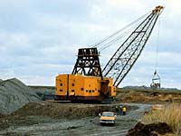

History of Coal Mining a mineral that is of great abundance, that generates profitable revenue for mining companies in western Canada, and that is not worth as much as other minerals (because of the availability) is one of the oldest industries in Saskatchewan. Coal mining began before the turn of the century along the banks of Willow Bunch Lake (1870) making it one of the earliest commodities to be mined in the province. Initially, coal was mined in underground operations. Coal was primarily mined by small one- or two-man operations, often unmapped or unrecorded. Their purpose was to provide coal for local and specific needs. For example, furnace coal was delivered to city homes in horse-drawn carts. Later, trains, trucks and eventually pipelines carried the 'black gold' from the mineral site to the buyers. It was not until 1927 that the first strip mine opened in the province. The underground mines could not compete against the more efficient surface operations, and by 1955-56, all underground mines had closed. In the Estevan area, it is estimated that there are more then 100 abandoned mines. In the Willow Bunch and Wood Mountain areas, 200 mines were abandoned and by Shaunavon, over 60 abandoned mines exist. Coal production in Saskatchewan began to expand with the commissioning of the Saskatchewan Power Corporation (SaskPower) Estevan Generating Station units from 1948 to 1957. In 1960 and 1961, the first two units were constructed at the Boundary Dam Power Station. Prior to the construction of the power stations, most coal was utilized for space heating or for industry processes. Coal production has risen steadily since the 1960's, as electricity demand increased and new power generating units stations were added. Annual coal production in the province peaked in 1988, as a result of a drought that restricted hydro-electric generation. The power utility, SaskPower, had to rely on coal-fired electrical generation for a higher than normal proportion of power demand. For the same reason, demand for Saskatchewan lignite in Ontario and Manitoba was high in 1988.
|
Description of Coal
Do you know what comprises coal? Quite simply, coal is plant and vegetable matter; matter that has been buried for millions of years. Through the action of chemical agencies, heat and pressure, the matter has been converted into a compact mineral fuel. Carbon is the main element making up coal (and carbon is the main element which is found in living things). Plants store energy and when coal (fossil plant matter) is burned, a release of energy results. This energy is used to power most of the electrical appliances and electrical machinery in our province. The class or grade of coal is related to the degree it has been altered by these processes. The more mature coals having a lower water content and a higher percentage of combustible matter than the less mature coals. Coals are divided into four major classes based primarily on the relative content of combustible matter, water and ash.
Coal produced in Saskatchewan contains approximately 35 per cent water, which places it in the upper rank of the lignite class or lignite "A"; it is of low heating value but is also low in sulphur. Sulphur emissions contribute to the growing problem of acid rain. Saskatchewan coal is preferred because it is 'clean-burning', emitting less sulphur into the air than coal mined in eastern Canada. Lignite coal is brownish black in color with leaf impressions, stems and the woody structure of tree trunks often recognizable. These features are the fossils of once living organisms. The coal is solid when first mined but breaks apart soon after extraction. Higher classes of coal become progressively harder, less affected by weathering and rarely contain identifiable plant impressions. The colors of these coals are shiny to dull black. Some anthratic coals are grey-black in color.
|
Location of CoalSaskatchewan coal is produced from areas across the southern part of the province near the U.S. border. The coal is produced from seams occurring in the Ravenscrag Formation which attains a thickness of 300 meters (1000 feet). The Ravenscrag Formation is a geological name for the main coal-bearing sediments of Tertiary age in southern Saskatchewan.
Coal often occurs in flat-lying deposits in soft rock formations lying near the surface; strip mining allows the coal to be removed and once reserves are exhausted, allows the land to return to some level of productivity by replacement of topsoil originally removed.
|
Mining CoalCoal is mined at the five coal mines in Saskatchewan by strip (open pit) mining. Surface mining is generally less costly and more flexible than underground mining and recovers a higher percentage of coal in a deposit. This type of mining involves removing the earth covering (overburden) the coal seams with huge draglines that have buckets. The coversoil removed is stockpiled for late reclamation. Up to 69 cubic meters of earth may be removed at one time. Sometimes blasting is required to fragment the overburden. Stripping the topsoil reveals the coal seam. The coal seam is then mined using machines called "shovels". These shovels can remove up to 16 cubic meters of coal at one time. The five mine sites have their own unique characteristics. For example, the coal at the Estevan area mines is of better quality than the coal at the Poplar River mine. The overburden in the Estevan area is more consolidated and competent than in the Willow Bunch/Wood Mountain area, permitting steeper highwall angles and the use of draglines with shorter booms. In the Willow Bunch/Wood Mountain area, greater soil stability problems are experienced because the lignite seams are more water-bearing. The coal is loaded into trucks or haulers, some with capacities up to 135 tonnes. These trucks transport coal from the Shand mine to the Shand power plant, and from the Boundary Dam and Utility mines to the Boundary Dam power plant. Railcars as well as truck and conveyor haulage is used to move coal from the Poplar River mine to the power plant. Coal that is sold to out-of-province markets is transported via rail.
|
Producers of CoalThe main mining of coal occurs on the Souris River Valley near Estevan, where the lignite coal feeds the Boundary Dam Power Station, responsible for a large proportion of the province's electric power. Some Saskatchewan coal is exported to Manitoba and western Ontario. A mine at Coronach feeds the Poplar River Power Station. At present there are five producing coal mines in Saskatchewan. The first four are located in the Estevan area and the last one in the Willow Bunch/Wood Mountain area.
The production at the Bienfait mine is destined for out-of-province markets (both Ontario and Manitoba) and a small amount is used to produce char, while other mines' production is dedicated primarily to electrical power generation within Saskatchewan. All five mines are strip mines (open pit) .
|
Uses for CoalThe primary consumer of coal in Saskatchewan is the domestic electricity sector, due to the fact that there are extensive coal resources. Saskatchewan, along with the provinces of Alberta and British Columbia account for over 85 percent of total coal production in Canada. Saskatchewan currently is the third largest producer of coal in Canada, accounting for approximately 14 to 17 per cent of the total coal production. Today, about 15 percent of Canada's electricity is generated from coal. Most of the coal produced in the province is used by the province in three thermal-electric generating stations operated by Saskatchewan Power corporation. Some coal is sold in Saskatchewan for domestic heating. Utilities and industrial customers in Manitoba and Ontario use the remainder of Saskatchewan coal. Most of this is exported via the railway. Coal consumption for electrical generation has increased over the years, particularly since the Shand power plant became operational in 1992.
Economic Impact of the Coal Industry for SaskatchewanAs stated, most of the coal mined here is sold directly to mine site thermal-electric generating stations. The low energy content (high water content) limits the market area which these coals are competitive ( or can be sold without upgrading). This is largely due to transportation costs, current low prices of competing fuels and large resources of similar costs immediately south of the Saskatchewan border. Current emphasis on research and application of new and proven technology to 'de-water' and reduce non-combustible content may lead to further increases in exports, both in volume and per cent of total production.
Environmental Concerns
|